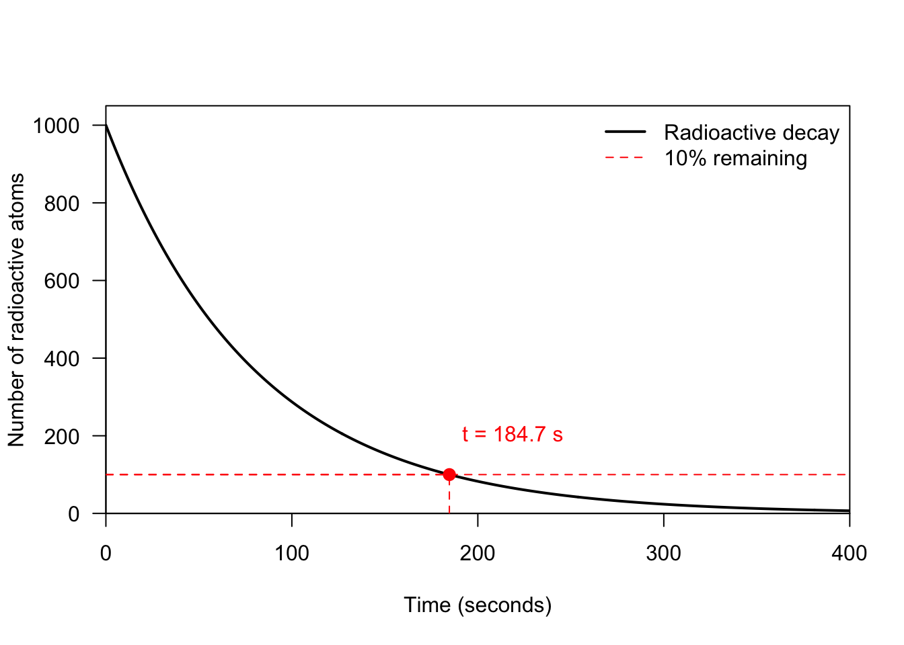
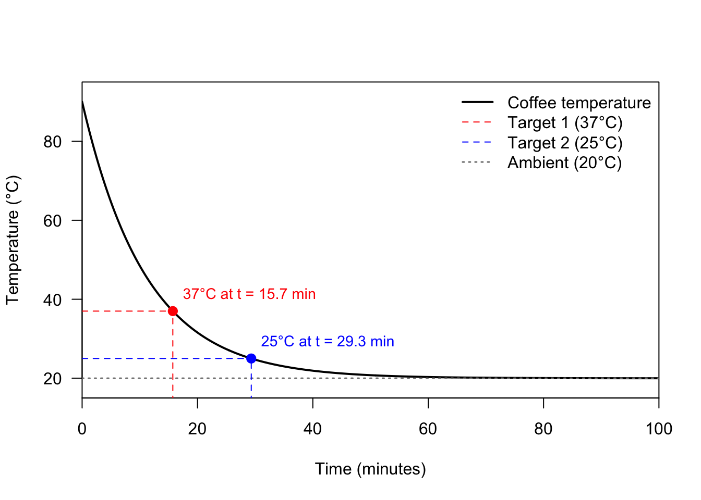
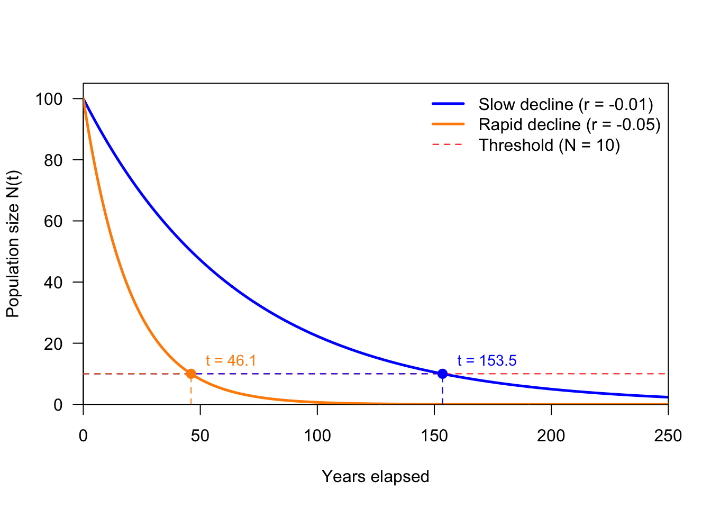

14 Differential equations
All you need is Euler’s method
Differential equations are among the most challenging and fundamental topics in mathematics. One famous example is the Navier–Stokes problem, one of the seven Millennium Prize Problems, for which partial computational breakthroughs have recently been claimed using artificial intelligence.
Unlike algebraic equations, where the solution is a number, the solution to a differential equation is a function. Yet, most differential equations cannot be solved analytically—their solutions cannot be expressed in closed form using elementary functions (Chapter 8). For instance, there is no simple elementary function \(y = f(t)\) whose derivative satisfies:
\[\frac{dy}{dt} = e^{-t^2}\]
However, from an applied perspective, deriving an exact algebraic expression for \(f(t)\) is often unnecessary. It usually suffices to construct the graph of \(f(t)\), which visually uncover the complete qualitative behavior of a dynamical system (Chapter 9).
Fortunately, for many common differential equations, constructing this graph of \(f(x)\) is straightforward using Euler’s method. Understanding this method not only provides a computational tool to solve differential equations, but also sheds light on how differential equations are constructed in the first place.
Consider the simple differential equation: \[\frac{dy}{dt} = r\]
where \(r\) is a constant. The key to numerical approximation is understanding the meaning of the left-hand side.
While \(\frac{dy}{dt}\) denotes the instantaneous rate of change of \(y\) with respect to \(t\) (Chapter 10), it can be approximated over a small time increment \(\Delta t\) using the ratio:
\[\frac{dy}{dt} \approx \frac{y_{t+\Delta t} - y_t}{\Delta t}\]
Substituting this approximation into the differential equation yields:
\[\frac{y_{t+\Delta t} - y_t}{\Delta t} = r\]
Rearranging terms to solve for the future state \(y_{t+\Delta t}\):
\[y_{t+\Delta t} = y_t + r \cdot \Delta t\]
Inspecting this equation closely, it is a first-order linear difference equation (Chapter 13).
By choosing a sufficiently small step size \(\Delta t\),future values can be computed recursively starting from an initial condition \(y_0\):
- \(y_1 = y_{\Delta t} = y_0 + r \cdot \Delta t\)
- \(y_2 = y_{2\Delta t} = y_1 + r \cdot \Delta t\)
- \(y_3 = y_{3\Delta t} = y_2 + r \cdot \Delta t\)
While this step-by-step update is an approximation (Euler’s method), choosing a small enough time step \(\Delta t\) yields an accurate numerical trajectory that can be plotted directly, making complex continuous-time systems accessible without requiring integration.
Formal
At its core, a differential equation relates a function to its own rates of change. While standard algebraic equations express relationships between static quantities (such as \(x^2 + 2x = 5\)), differential equations describe systems in continuous motion or transformation.
A differential equation is an equation that contains one or more derivatives of an unknown function with respect to one or more independent variables.
Every differential equation is built from three essential structural components:
The Independent Variable: The underlying domain variable driving change, commonly denoted as \(t\) (representing time in dynamical systems) or \(x\) (representing spatial location).
The Dependent Variable (The Unknown Function): The state function we seek to solve, commonly denoted as \(y(t)\), \(u(x)\), or \(f(t)\). Unlike algebraic equations where the unknown object is a single number, the unknown object in a differential equation is an entire function.
The Derivatives (Rates of Change): Terms showing how the dependent variable responds instantaneously to changes in the independent variable. These are expressed using Leibniz notation (\(\dfrac{dy}{dt}\), \(\dfrac{d^2y}{dt^2}\)) or Lagrange notation (\(y'\), \(y''\)) (Chapter 10).
Examples
While many complex differential equations require numerical approximations (such as Euler’s method), several foundational first-order models possess exact analytical solutions expressed using the exponential function \(\exp(x)\) (Chapter 12). These canonical models form the bedrock of continuous-time dynamical systems across physics, biology, and finance.
Radioactive decay is a fundamental physical process governed by a first-order linear differential equation. The rate at which radioactive nuclei decay is directly proportional to the quantity of radioactive material present at any given moment.
Let \(N(t)\) denote the number of radioactive atoms present at time \(t\). The decay rate is described by the differential equation:
\[\frac{dN}{dt} = -\lambda N\]
where \(\lambda > 0\) is the element-specific decay constant (measured in \(\text{time}^{-1}\)).
Consider the isotope Radon-220 (\(^{220}\text{Rn}\)) where the decay constant1 \(\lambda = 0.01247 \text{ s}^{-1}.\)
Starting with 1000 elements, the next figure models the continuous exponential decay process and highlights the point at which \(10\%\) of the initial isotope remains:
Figure 14.1: Atomic decay of Radon-220 Newton’s Law of Cooling models how a heated or cooled object changes temperature over time as it interacts with its surrounding environment. A classic real-world example is tracking how fast a hot cup of coffee cools down to room temperature.
The rate of change of the object’s temperature \(T(t)\) is directly proportional to the difference between its current temperature and the ambient temperature \(T_a\):
\[\frac{dT}{dt} = -k (T - T_a)\]
where:
- \(T(t)\) is the temperature of the object (e.g., coffee) at time \(t\).
- \(T_a\) is the constant ambient temperature of the surrounding room.
- \(k > 0\) is the cooling constant (\(\text{time}^{-1}\)), which depends on physical factors such as the volume of the liquid, the surface area and shape of the container, and the thermal conductivity of the cup material.
- The negative sign indicates that if the object is hotter than the room (\(T > T_a\)), its temperature decreases over time (\(\frac{dT}{dt} < 0\)).
\[T(t) = T_a + (T_0 - T_a) e^{-kt}\]

Figure 14.2: Newton’s law of cooling for coffee (\(T_0 = 90^\circ\text{C}, T_a = 20^\circ\text{C}\)). Red dashed lines show the time to reach \(37^\circ\text{C}\) and \(25.5^\circ\text{C}\). In continuous-time ecology, the simplest model of population dynamics assumes that per-capita rates of reproduction and mortality remain constant over time. This leads to the Malthusian growth model.
Let \(N(t)\) denote the total population size at continuous time \(t\). The instantaneous rate of change of the population is given by:
\[\frac{dN}{dt} = (b - d)N = r N\]
where:
- \(b > 0\) is the per-capita birth rate (more potential parents yield proportionally more offspring).
- \(d > 0\) is the per-capita death rate (mortality scales proportionally with current population size).
- \(r = b - d\) is the net continuous intrinsic growth rate.
Given an initial population \(N(0) = N_0\) at \(t = 0\), integrating \(\frac{dN}{dt} = r N\) yields the continuous exponential solution:
\[N(t) = N_0 e^{r t}\]
The long-term trajectory of the population is determined entirely by the sign of the net intrinsic growth rate \(r\):
- Exponential Growth (\(r > 0 \implies b > d\)): Births outpace deaths. The population grows
- Births exactly balance deaths. The population stays completely static over time (\(N(t) = N_0\)).
- Deaths outpace births. The population declines exponentially toward zero. Mathematically identical to radioactive decay.
The script below models two population decline scenarios (\(r_1 = -0.02\) vs. \(r_2 = -0.05\)) starting from \(N_0 = 100\), tracking the exact time required to reach a threshold of \(10\%\) of the initial population (\(N_{\text{target}} = 10\)).

Figure 14.3: Exponential population decline for negative growth rates (\(r < 0\)). The plot compares slow decay (\(r = -0.015\)) versus rapid decay (\(r = -0.05\)) to reach a target threshold of 10% remaining population.
Tips and warnings
Notational Conventions for Derivatives: Common notations for the first derivative include \(\frac{df}{dt}\), \(f'\), and \(\dot{f}\):
- Newton’s Notation (\(\dot{f}\)): Uses a dot over the function symbol and is primarily used in physics and dynamics to denote differentiation with respect to time \(t\).
- Lagrange’s Notation (\(f'\)): Uses a prime mark to denote the derivative. While concise, it leaves the independent variable implicit.
- Leibniz’s Notation (\(\frac{df}{dt}\)): Though requiring more characters, Leibniz notation is the most explicit. It visually preserves the derivative’s origin as a ratio of differential displacements (\(d\)), while clearly identifying both the dependent variable in the numerator and the independent variable of differentiation in the denominator.
The order of a differential equation is determined by the highest derivative present in the equation. Higher-order derivatives are denoted using Leibniz notation (\(\frac{d^n y}{dt^n}\)) or Lagrange notation (\(y^{(n)}\)). Note that the parentheses around the exponent in \(y^{(n)}\) allow to distinguish the \(n\)-th derivative and taking the function to the \(n\)-th power, \(y^n\). In biological modeling and ecology, most foundational equations are first-order (involving only the first derivative \(\frac{dy}{dt}\)), as they express rates of population change or chemical flux directly as a function of the current state.
While the analytical solutions covered in previous sections (such as \(y(t) = y_0 e^{rt}\)) offer neat, exact formulas for simple models, the vast majority of real-world differential equations cannot be solved analytically. Instead, we find practical solutions numerically by approximating the continuous differential equation with an equivalent discrete-time difference equation—a fundamental concept demonstrated by Euler’s method. In R, specialized packages such as
deSolveprovide methods that numerically solve differential equations with high precision.
calculated from the half-life↩︎